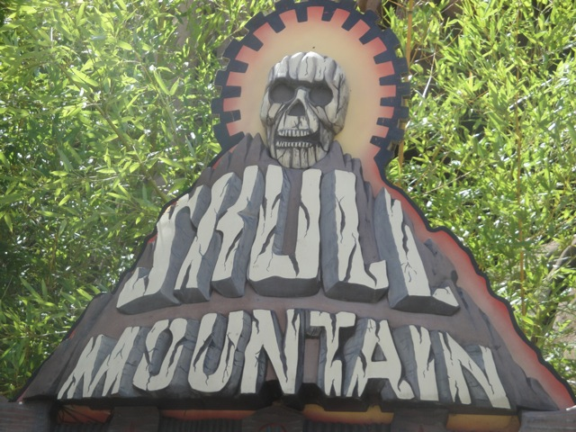

| |
Skull Mountain Review

We're here at Six Flags Great Adventure. Today's coaster is actually inside. So if its raining during your visit at Six Flags Great Advenuture, you still have something to ride. But you still have El Toro closed and this doesn't qualify as making it up. But hey. At least it's SOMETHING. So we get in the cars, pull down the lap bars, and we're off. We head around a turn, which is semi-outside before heading back fully inside to climb the lifthill. We go down a first drop and then through a bunch of turns. So it's kind of like Space Mountain, only without cool music and more laterals. Still prefer Space Mountain. But yeah. Skull Mountain is still a fun ride. Sorry I can't talk about it more since I'm not familiar with its layout other than the fact that it has a bunch of turns. Oh well. It's still a fun ride that I'd give a ride while you're at Six Flags Great Adventure.
6/10
Location: Six Flags Great Adventure
Opened: 1996
Built by: Intamin
Last Ridden: August 4, 2011
Skull Mountain Photos
|